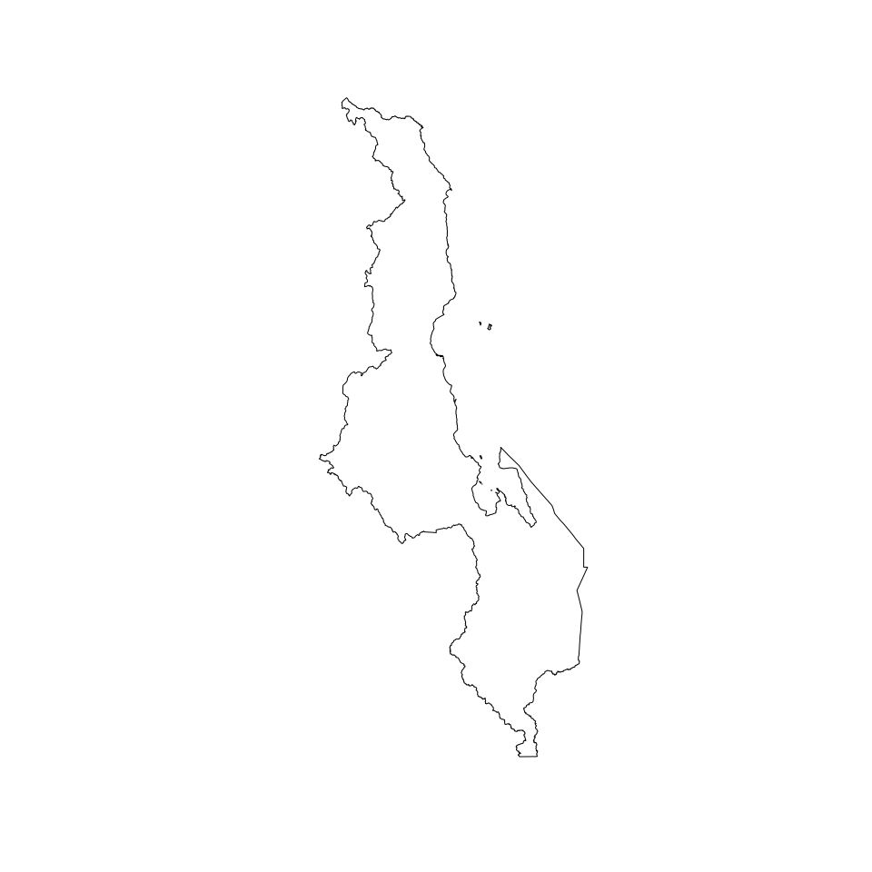
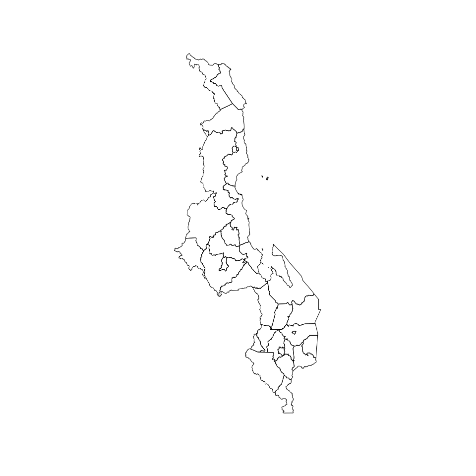
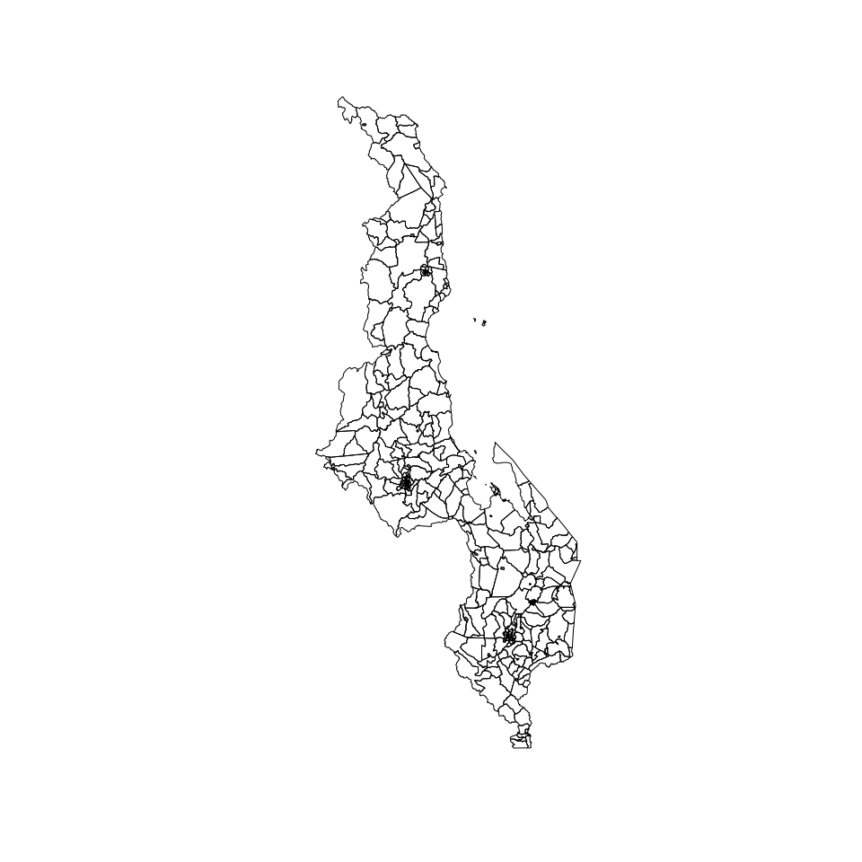
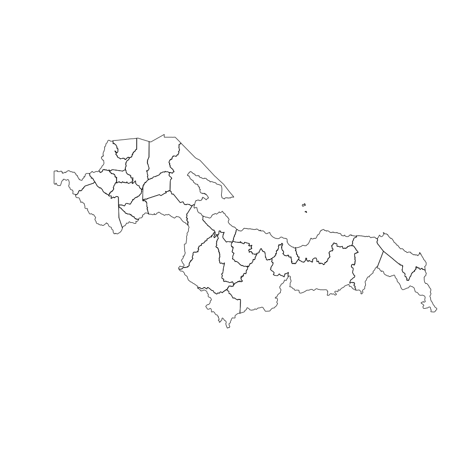

Designing surveys require relevant datasets to be used as basis for sample size calculations, sampling design, survey planning/logistics and survey implementation. These include datasets on population, lists of sampling clusters, map datasets for spatial sampling, and previous survey datasets that can be used for estimating indicator variance and design effects. This package contains relevant datasets for use in designing surveys in Malawi.
Installation
You can install the development version from GitHub with:
if (!require("remotes")) install.packages("remotes")
remotes::install_github("spatialworks/malawi")Usage
Retrieve and plot Malawi country borders
#> Reading layer `mwi_admbnda_adm0_nso_20181016' from data source `/tmp/RtmpLL7JbU' using driver `ESRI Shapefile'
#> Simple feature collection with 1 feature and 10 fields
#> Geometry type: MULTIPOLYGON
#> Dimension: XY
#> Bounding box: xmin: 32.67162 ymin: -17.12628 xmax: 35.91842 ymax: -9.363662
#> Geodetic CRS: WGS 84
Retrieve and plot Malawi regions borders
#> Reading layer `mwi_admbnda_adm1_nso_20181016' from data source `/tmp/RtmpLL7JbU' using driver `ESRI Shapefile'
#> Simple feature collection with 3 features and 12 fields
#> Geometry type: MULTIPOLYGON
#> Dimension: XY
#> Bounding box: xmin: 32.67162 ymin: -17.12628 xmax: 35.91842 ymax: -9.363662
#> Geodetic CRS: WGS 84
Retrieve and plot Malawi districts borders
#> Reading layer `mwi_admbnda_adm2_nso_20181016' from data source `/tmp/RtmpLL7JbU' using driver `ESRI Shapefile'
#> Simple feature collection with 32 features and 14 fields
#> Geometry type: MULTIPOLYGON
#> Dimension: XY
#> Bounding box: xmin: 32.67162 ymin: -17.12628 xmax: 35.91842 ymax: -9.363662
#> Geodetic CRS: WGS 84
Retrieve and plot Malawi traditional authority areas borders
#> Reading layer `mwi_admbnda_adm3_nso_20181016' from data source `/tmp/RtmpLL7JbU' using driver `ESRI Shapefile'
#> Simple feature collection with 368 features and 16 fields
#> Geometry type: MULTIPOLYGON
#> Dimension: XY
#> Bounding box: xmin: 32.67162 ymin: -17.12628 xmax: 35.91842 ymax: -9.363662
#> Geodetic CRS: WGS 84
Retrieve and plot Malawi livelihood zones
#> Reading layer `mwi_phy_predlhz_geonode_20140612' from data source
#> `/tmp/RtmpLL7JbU' using driver `ESRI Shapefile'
#> Simple feature collection with 28 features and 6 fields
#> Geometry type: MULTIPOLYGON
#> Dimension: XY
#> Bounding box: xmin: -17.125 ymin: 32.67395 xmax: -9.367541 ymax: 35.91682
#> Geodetic CRS: WGS 84